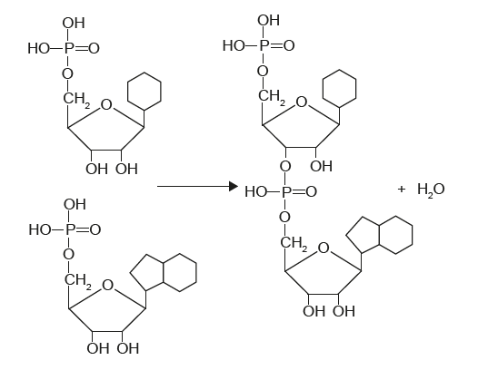
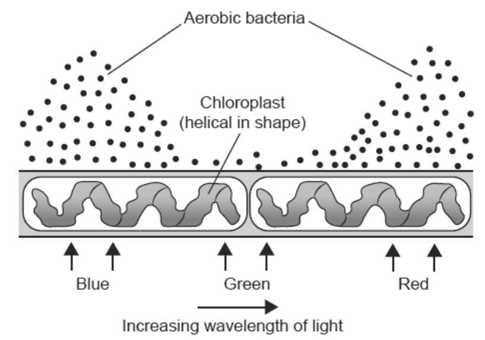

What are the type of reaction and the product(s) shown in this reaction?

What are the type of reaction and the product(s) shown in this reaction?
The diagrams show how monosaccharide molecules are joined to form chains in two polysaccharides.
Using the diagram and the table, which diagram and monosaccharide represent glycogen?

Which process is an example of catabolism?
Olive oil may reduce the risk of coronary heart disease. What is/are the compound(s) responsible for the health benefits of olive oil?
Meselson and Stahl investigated DNA replication by first feeding bacteria with bases containing 15N (heavy), and then with bases containing 14N (light). The results are shown
in the photographs.
in the photographs.
From this information, what would be the composition of the DNA in generation 3?
Which statement applies to enzymes?
The graph shows the results of an experimental investigation that compared the rates at
which lactose, glucose and galactose are broken down in the process of anaerobic cellular respiration by the yeast Torulopsis cremoris.
which lactose, glucose and galactose are broken down in the process of anaerobic cellular respiration by the yeast Torulopsis cremoris.
What can be concluded from these results?
In 1882, Engelmann investigated photosynthesis by shining light of varying wavelength on a green alga. He observed where aerobic bacteria accumulated.

What can be deduced from this experiment?
The apparatus shown was used to investigate the effect of varying carbon dioxide concentration on the rate of photosynthesis. Carbon dioxide concentrations were
varied by adding different amounts of sodium hydrogen carbonate (NaHCO3) to water.
varied by adding different amounts of sodium hydrogen carbonate (NaHCO3) to water.
What is the dependent variable in this investigation?
Paper 2 Style Questions
Explain enzyme–substrate specificity. [3 marks]